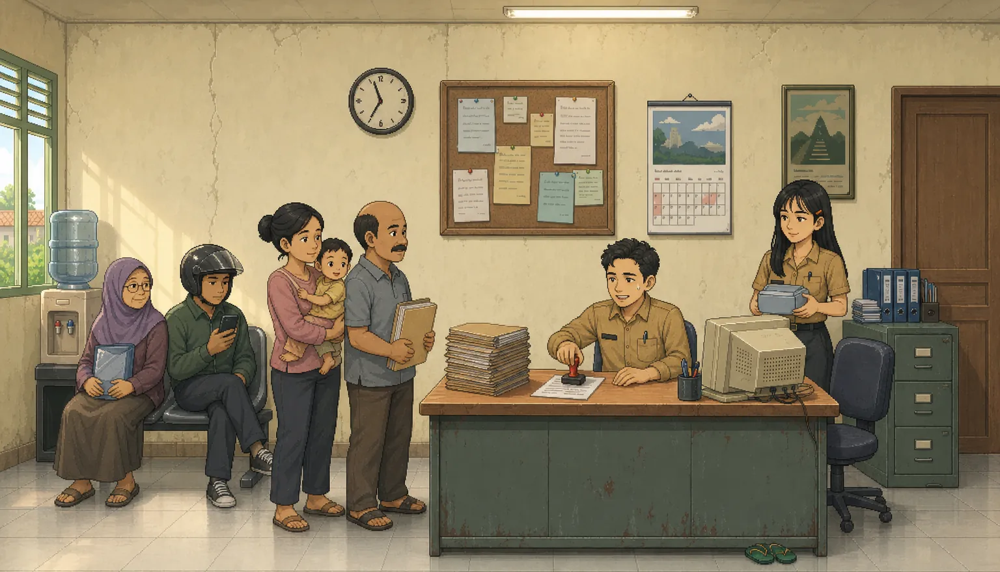
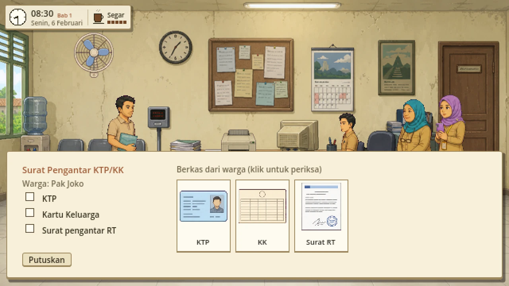
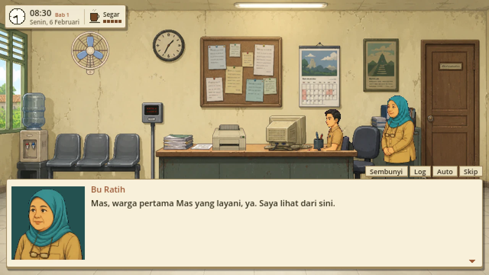
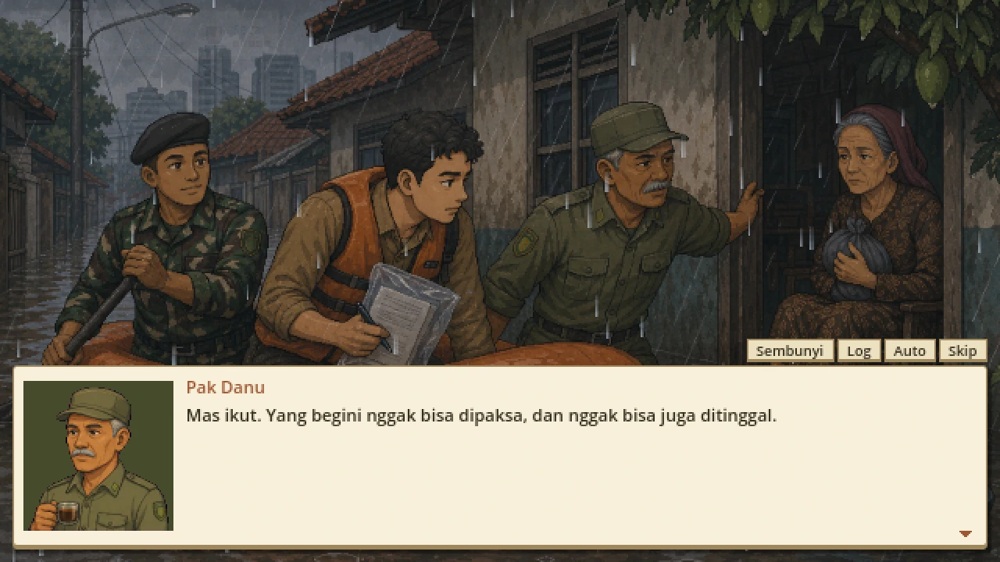
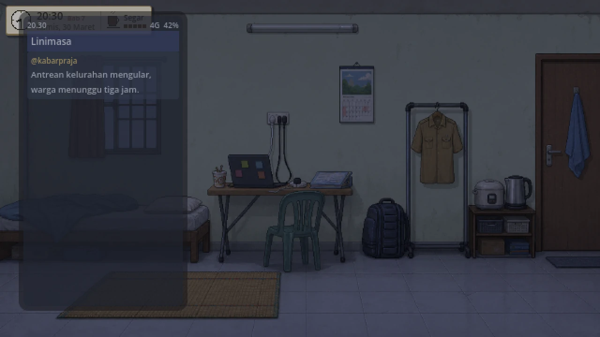
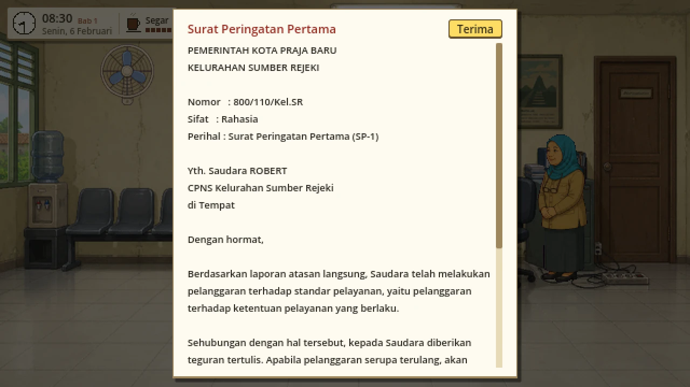
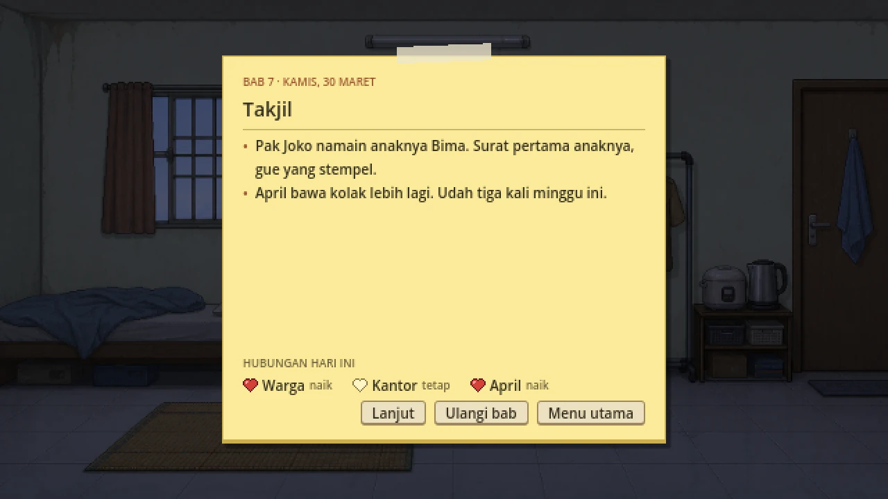
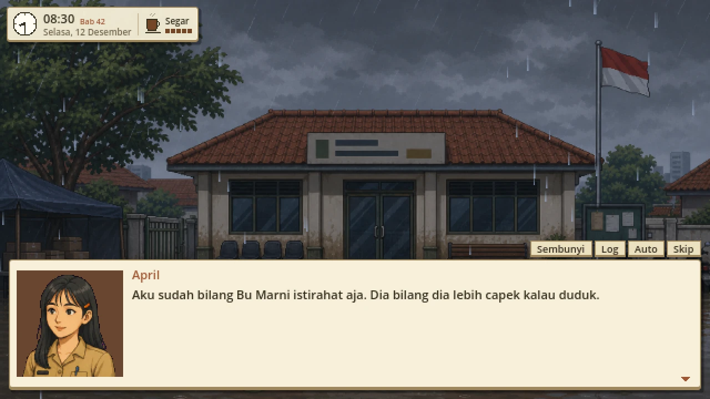
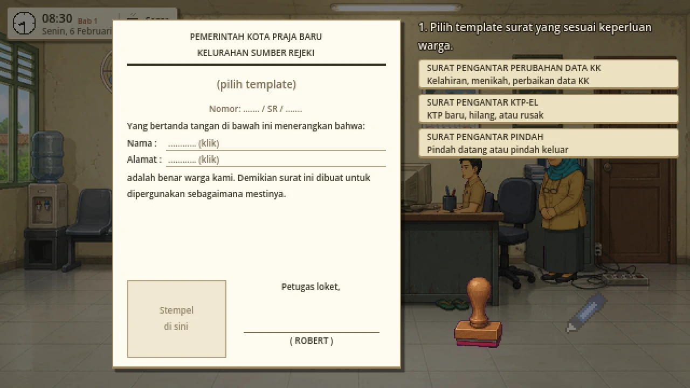
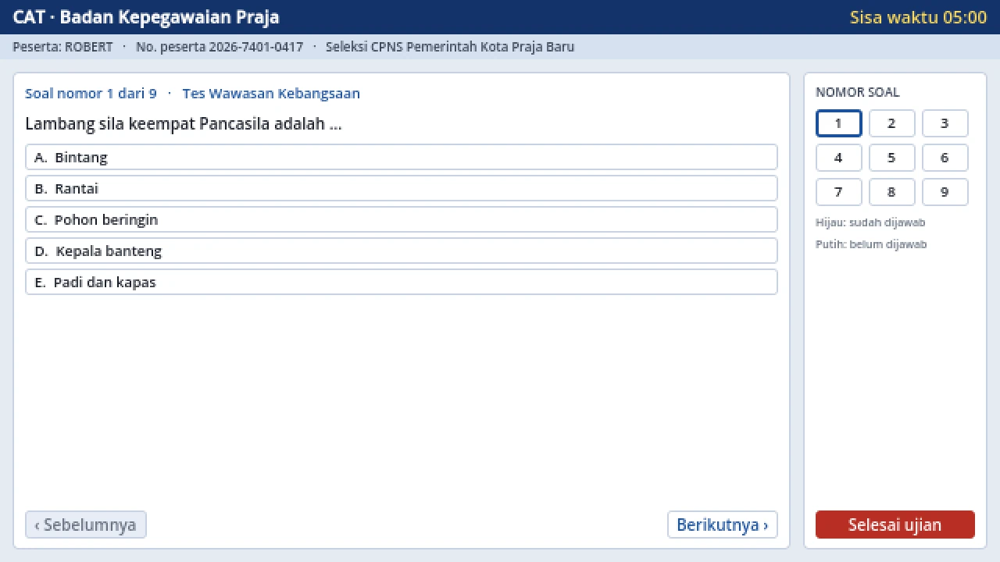

Dari tukang nyinyir, jadi yang duduk di balik loket.From comment-section critic to the one behind the counter.
Robert dulu rajin nyinyir soal pegawai kelurahan di kolom komentar. Habis kena layoff, dia iseng ikut tes CPNS dan ternyata lolos. Sekarang dia yang duduk di balik meja loket, melayani warga yang dulu senasib dengannya.Robert used to trash civil servants in comment sections. After a tech layoff he takes the civil service exam on a whim, and passes. Now he's the one behind the counter of a small neighborhood office in Indonesia.
Tentang gameAbout the game
Cuma Umbi adalah game naratif tentang setahun pertama seorang CPNS di Kelurahan Sumber Rejeki, kantor pelayanan kecil di kota fiktif Kota Praja Baru.
Robert, programmer startup, kena layoff lewat video call tiga belas menit. Malamnya dia nulis komentar pedas soal petugas kelurahan yang kelihatan main HP di jam kerja. Beberapa bulan kemudian dia lolos tes CPNS, pakai seragam khaki yang lipatannya masih kotak-kotak, dan disuruh duduk di loket.
- Jaga meja loket. Periksa berkas warga satu per satu, pilih surat yang benar, isi kolomnya, stempel, paraf. Kalau kamu salah centang, warganya disuruh bolak-balik, dan mereka ingat.
- Ambil keputusan kecil setiap hari. Ada amplop “buat beli kopi”, titipan berkas dari kenalan atasan, dan komentar di medsos jam sebelas malam. Lebih dari lima puluh kejadian bisa muncul berbulan-bulan kemudian dari pilihan yang sudah kamu lupa.
- Atur hidup di luar jam kantor. Gaji CPNS harus cukup buat uang kos, energi habis kalau tiap malam lembur, ibu nanya kapan pulang, dan hari Sabtu bisa dipakai istirahat atau buat nebus janji.
- Jalani setahun penuh. Kamu pindah dari pelayanan ke Kesos, Ekbang, lalu Trantib. Ada puasa dan Lebaran, tujuh belasan, video viral, banjir bulan Desember, sampai wawancara evaluasi di akhir masa percobaan.
Ada empat akhir cerita, dan semuanya ditentukan cara kamu kerja selama setahun, bukan satu pilihan di menit terakhir.
Cuma Umbi is a narrative game about a new civil servant's first year at Sumber Rejeki, a small neighborhood service office (kelurahan) in the fictional city of Kota Praja Baru, Indonesia.
Robert, a startup programmer, gets laid off over a thirteen-minute video call. That night he posts a nasty comment about a kelurahan clerk caught scrolling on his phone at work. A few months later he passes the civil service exam, puts on a khaki uniform that still has the fold creases, and gets assigned to the service counter.
- Work the counter. Check each resident's documents, pick the right letter template, fill it in, stamp it and sign it. Tick the wrong box and they have to come back another day, and they remember.
- Make small decisions every day. An envelope “for coffee”, a file pushed through by your boss's acquaintance, a comment you post at 11 pm. Over fifty events can come back months later from choices you have already forgotten.
- Manage life after office hours. A trainee salary against rent, energy that runs out if you work late every night, your mother asking when you're coming home, and Saturdays you can spend resting or keeping a promise.
- Live through a full year. Rotate through four sections, from front desk service to public order: fasting month and Eid, Independence Day, a viral video, a December flood, and an evaluation interview at the end of probation.
There are four endings, decided by how you worked for the whole year rather than by one last choice. The game is in Indonesian only.
- PengembangDeveloper
- CloudID Studio, IndonesiaCloudID Studio, Indonesia
- PlatformPlatform
- Windows, Android
- RilisRelease
- Belum ditentukanTo be announced
- BahasaLanguage
- IndonesiaIndonesian only
- DurasiLength
- Sekitar 5 jam sekali tamatAbout 5 hours per playthrough
- GenreGenre
- Game naratif, simulasi kerjaNarrative game, work sim
- StatusStatus
- Masih playtestIn playtesting
ScreenshotScreenshots


















Kenapa “umbi”Why “umbi”
Di kalangan PNS, “umbi” itu sebutan buat pegawai paling bawah. Kerjanya nggak kelihatan dari atas, tapi hampir semua urusan warga lewat tangannya. Di awal cerita Robert pakai kata itu buat ngeles, dan di akhir tahun artinya udah geser.
Among Indonesian civil servants, “umbi” (a root tuber) is slang for the lowest rank: out of sight from the top, but almost every citizen's paperwork goes through their hands. Robert uses the word as an excuse early on; by the end of the year it means something else to him.
Tentang CloudID StudioAbout CloudID Studio
CloudID Studio adalah studio satu orang dari Indonesia. Cuma Umbi dibuat dengan Godot.
Gambar, musik latar, dan suara tokoh dibuat dengan bantuan AI sebelum game dikemas (gpt-image-2, ACE-Step 1.5, ElevenLabs), lalu dipilih dan disunting pengembang. Efek suara disintesis kode. Tidak ada AI yang jalan saat game dimainkan. Semua nama, instansi, dan kejadian di game ini fiksi.
CloudID Studio is a one-person studio from Indonesia. Cuma Umbi is made with Godot.
Images, background music and character voices were made with AI assistance before packaging (gpt-image-2, ACE-Step 1.5, ElevenLabs), then selected and edited by the developer. Sound effects are synthesized in code. No AI runs while you play. All names, offices and events in the game are fictional.
KontakContact
Mau tanya, meliput, atau lapor bug? Kirim email saja.Questions, press, or a bug report? Just send an email.
- fauzi@cloudcode.id
- PrivasiPrivacy
- Kebijakan privasiPrivacy policy. Singkatnya, game ini tidak mengumpulkan data apa pun.In short, the game collects no data at all.